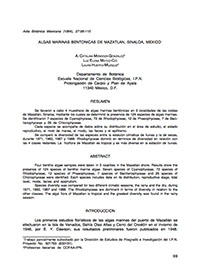

Referencias
- Calderón de Rzedowski, G. y J.R. Rotter. 2000. laura Huerta Múzquiz (1913-2000). Acta Botánica Mexicana 52:1-3.
- Cifuentes, L.J.L., P. Torres-García y M. Frías. 2003. El océano y sus recursos. VII. Flujos de energía en el mar: reproducción y migraciones. Fondo de Cultura Económica, Serie La ciencia para todos No. 63, México. 154 p.
- Godínez, O.J.L. 2008. Los colectores de algas de México (1787-1954). Acta Botánica Mexicana 85: 75-97.
- González, G.J. 1987. Las Algas de México. Ciencias 9:16-25
- Robledo, D. 1997. Las algas y la biodiversidad. CONABIO. Biodiversitas 13: 1-4.
- Seoánez C.M. 2000. Manual de contaminación marina y restauración del litoral. Munidi-Prensa, España. 565 p.
Laura Huerta Múzquiz
1913 - 2000
Laura Huerta Múzquiz fue una destacada química, bacterióloga parasitóloga, pionera en los estudios de las algas en México. Con ella comenzó una nueva época de la ficología nacional, intensificándose la recolección de algas por colectores mexicanos y creándose importantes herbarios en el país. Nació en 1913 en Coahuila y murió en el año 2000.
En 1934 se mudó a la Ciudad de México y ahí se incorporó a la recién creada Escuela de Bacteriología, Parasitología y Fermentaciones de la Universidad Gabino Barreda, posteriormente convertida en la Escuela Nacional de Ciencias Biológicas del Instituto Politécnico Nacional (ENCB).
Sus primeros estudios los realizó sobre hormonas y enzimas de plantas y animales en el Laboratorio de Fisiología General Vegetal de dicho instituto, al que se integró en 1938. Posteriormente realizó una estancia en el Instituto para la Investigación de Hormonas de Plantas en Estados Unidos. Sin embargo, fue a raíz de una expedición oceanográfica organizada en 1955 por la ENCB, que comenzó su interés por el estudio de las algas marinas. A partir de este momento se dedicó a trabajar sobre la florística y ecología de estos seres, incluyendo investigaciones sobre el fitoplancton y algunos aspectos sobre su aprovechamiento.
Publicó más de 20 artículos científicos sobre las algas del Golfo de México, la Península de Yucatán, las costas de Oaxaca, Colima, Sinaloa y Baja California. También se dedicó a la docencia, impartió clases de citología vegetal, botánica criptogámica y ecología de algas.
¿Sabías qué?
Aproximadamente el 80% de la fotosíntesis total del planeta se efectúa en los océanos, dado que las algas marinas son el principal componente de la flora marina, son estos organismos los principales responsables de la producción de oxígeno en el mundo.
Para el ser humano tienen además una gran importancia puesto que les ha dado varios usos, principalmente el alimenticio, de hecho se consumen anualmente más de 40, 000 toneladas de algas en el mundo.
Aportación
- Contribución al estudio de las algas marinas bentónicas de Punta Arena y Cabo Pulmo, Baja California Sur, México. Luz Elena Mateo-Cid, A. Catalina Mendoza-González, Citlalli Galicia García, Laura Huerta Múzquiz. Acta Botanica Mexicana

- Algas marinas bentónicas de Mazatlán, Sinaloa, México A. Catalina Mendoza-Gonzalez, Luz Elena Mateo-Cid, Laura Huerta-Muzquiz. Acta Botanica Mexicana